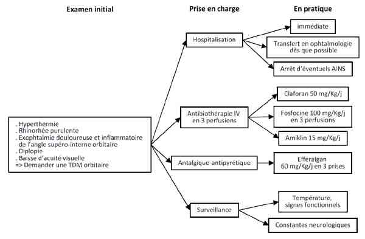

Cellulite orbitaire de l'enfant
EnfantSpécialité : infectieux / ophtalmologie / pédiatrie /
Points importants
- Complication habituelle d'une ethmoïdite
- Germes probables : Haemophilus influenzae, streptocoques
- Importance du diagnostic différentiel : rhabdomyosarcome (tumeur maligne d'aspect pseudo-infectieuse à développement rapide)
Présentation clinique / CIMU
SIGNES FONCTIONNELS
Généraux
- Céphalées
Non spécifiques locaux
- Œil hyperhémié avec dilatation des vaisseaux conjonctivaux
- Œil douloureux
- En règle unilatéral
- Possible baisse d'acuité visuelle
Spécifiques
- Inflammation palpébrale ++ (rougeur, chaleur, oedème, douleur)
- Exophtalmie, début supéro-interne++
- Diplopie
- Douleur à la palpation et mobilisation du globe oculaire
CONTEXTE
Circonstances de survenue
- Dacryocystite aiguë récente
- Ethmoïdite, contexte infectieux ORL
EXAMEN CLINIQUE
- Hyperthermie
- Rhinorrhée purulente
- Adénopathie locorégionale
- Recherche de l'état de conscience, d'une raideur de nuque
- Pression digitale en regard du sac lacrymal (angle interne de l'oeil) à la recherche d'une expression purulente par les méats lacrymaux (objective une dacryocystite)
EXAMENS PARACLINIQUES SIMPLES
TDM orbitaire
- Infiltration de la graisse orbitaire
- Elimine une tumeur
CIMU
- Tri 2
Diagnostic étiologique
- Ethmoïdite++ : Haemophilus influenzae, streptocoque
Diagnostic différentiel
- Tumeur orbitaire : rhabdomyosarcome
- Corps étrange intraorbitaire
Traitement
TRAITEMENT INTRAHOSPITALIER
Antibiothérapie TRIPLE IV en association
Drainage chirurgical urgent si
- Exposition cornéenne non réductible
- Détérioration des constantes neurologiques
- 72h d'antibiotiques inefficaces
Antipyrétiques-antalgiques
- Paracétamol : 60 mg/kg /j
MEDICAMENTS
- Cefotaxime : 50 mg/kg/6h ou Ceftriaxone : 50 mg/kg/12h
- Fosfomycine : 100 mg/kg/j en 3 doses séparées
- Amikacine : 15 mg/kg/j
Surveillance
CLINIQUE
- Température centrale x 3/j
- Evolution de l'exophtalmie, des douleurs, de l'inflammation locale x 3/j
- Constantes neurologiques x 3/j
PARACLINIQUE
- TDM orbitaire
Devenir / orientation
CRITERES D'ADMISSION
- Consultation ophtalmologique en urgence
- Hospitalisation systématique
Mécanisme / description
- La cellulite orbitaire est l'extension rétroseptale (au delà du septum orbitaire) d'une infection locale, favorisée chez l'enfant par une ethmoïdite ou la présence d'un corps étranger, même ancien
- Les complications possibles sont l'ulcère cornéen d'exposition, la collection locale : abcès orbitaire, la névrite optique, la septicémie, la thrombophlébite du sinus caverneux (confusion fébrile associée)
Algorithme
Algorithme : cellulite orbitaire
 _17 Algorithme Algorithme : cellulite orbitaire de l'enfant
Bibliographie
- P. Dureau. Cellulite orbitaire. Archives de pédiatrie 2004; 11(12): 1555-6
Auteur(s) : Jean-Louis BOURGES